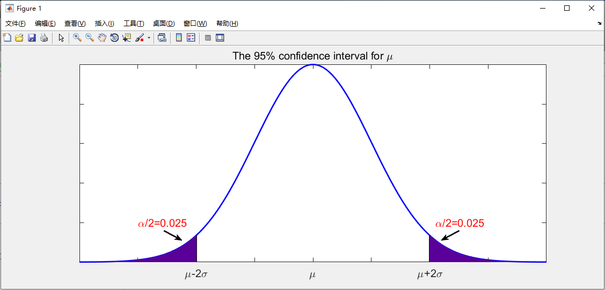

Email : zengf.hou@bit.edu.cn
Welcome to exchange and study！
Using Matlab can also draw a beautiful confidence interval and normal distribution Curve curve. Here is the specific code. It's worth noting that the following code is based on Matlab 2018b.
%% ==================================================
% Author: Zephyr Hou
% Time: 2020-09-26
%% Main Function
clc;clear;close all;
x=-4:0.01:4;
y=gaussmf(x,[1,0]);
plot(x,y,'b','LineWidth',2);hold on;
axis([-4 4 0 1.001])
%% 置信区间边界
plot([-2,-2],[0,gaussmf(-2,[1,0])],'k','LineWidth',2);hold on
plot([2,2],[0,gaussmf(2,[1,0])],'k','LineWidth',2);hold on
%% 置信区间颜色填充
for i=1:floor(length(x)/4)
plot([x(i),x(i)],[0,gaussmf(x(i),[1,0])],'Color',[0.35,0,0.6],'LineWidth',2);hold on
end
for i=1:floor(length(x)/4)
ind=x(x>2);
plot([ind(i),ind(i)],[0,gaussmf(ind(i),[1,0])],'Color',[0.35,0,0.6],'LineWidth',2);hold on
end
%% 图中标注设置
set(gca,'XTicklabel',{' ',' ','\mu-2\sigma',' ','\mu',' ','\mu+2\sigma',' '},'fontsize',15)
set(gca,'YTicklabel',[])
annotation('arrow',[0.27,0.30],[0.24,0.20],'LineWidth',2)
annotation('arrow',[0.76,0.73],[0.24,0.20],'LineWidth',2)
text(-3,0.20,'\alpha/2=0.025','color','r','fontsize',15)
text(2.1,0.20,'\alpha/2=0.025','color','r','fontsize',15)
title('The 95% confidence interval for \mu','fontsize',15)
%% ===================================================
The operation results is as follows：
Reference:
If you use this program to draw a normal distribution curve, please cite the following paper.